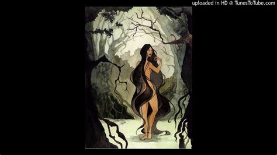

La Ciguapa is said to lure men with their bewitching gaze and seductive bodies. They either mesmerize their victims or simply entice them with their looks. Once the poor man is in their lair, it is not a night of passion that awaits them. Instead, La Ciguapa kills them, if they are lucky, or begins to eat them alive. Depictions here start to differ. Some tales have La Ciguapa transforming into a bird-like creature and rending its victim with powerful claws. Others show a gentler side, one where the creature simply abducts the men to use as mates. Though that gentleness is short-lived because once the men have served their purpose, they are served as a snack.
That ties into an interesting story around a poor man who was unfortunate enough to meet this creature. A man was wandering deep into the woods around his town when he came across La Ciguapa. The monster did not rush him and he avoided her eyes, having heard that once you look into them it is all over for you. It tugged at his clothes and began to make chirping sounds. As the sounds grew louder and more insistent, he felt a strong urge to follow the creature, to touch it. Instead, he turned and ran back to his home, to his wife and child. La Ciguapa followed him and upon seeing his wife, flew into a rage. Attacking the woman and killing her. This myth and its variations warn how jealous the creature can become if it takes a liking to you.